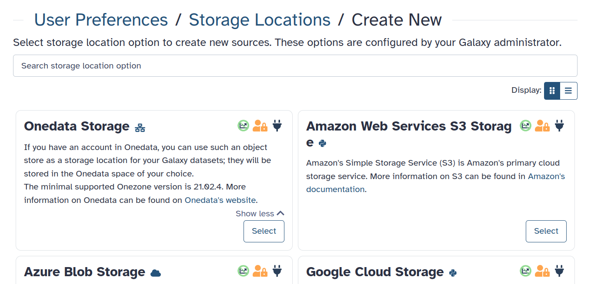
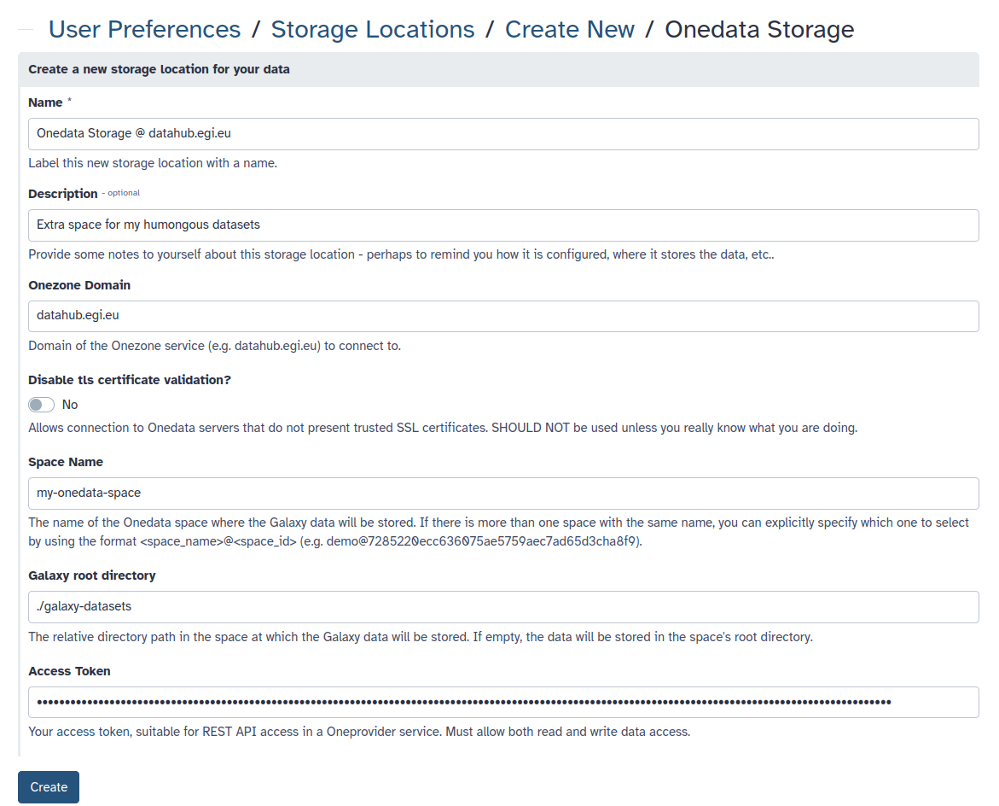
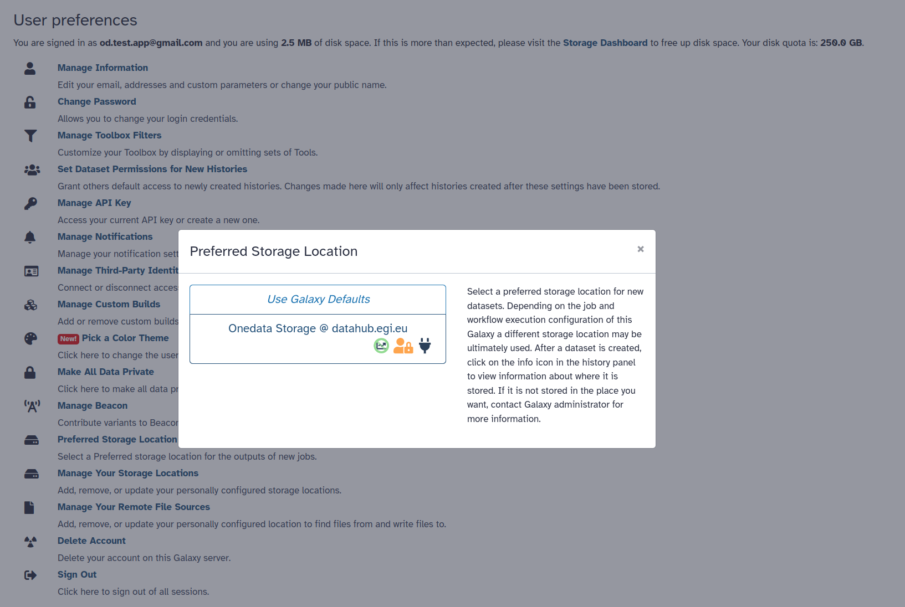

Onedata user-owned storage
| Author(s) |
|
| Reviewers |
|
OverviewQuestions:
Objectives:
How to use Onedata as a Storage Location for Galaxy datasets?
What is the difference between Remote File Source and Storage Location?
What permissions are required for Onedata Storage Location?
Requirements:
Configure Onedata as a Storage Location for Galaxy datasets.
Learn how to manage Storage Location preferences.
Understand the requirements and implications of using Onedata storage.
- tutorial Hands-on: Galaxy Basics for genomics
- tutorial Hands-on: Getting started with Onedata distributed storage
Time estimation: 15 minutesLevel: Introductory IntroductorySupporting Materials:Published: Mar 24, 2025Last modification: Apr 8, 2025License: Tutorial Content is licensed under Creative Commons Attribution 4.0 International License. The GTN Framework is licensed under MITpurl PURL: https://gxy.io/GTN:T00490version Revision: 3
Agenda
Prerequisites
- This tutorial assumes that you have basic knowledge about Onedata and access to a Onedata ecosystem. If needed, follow this tutorial first!
- To use Onedata as user-owned storage, you need the domain of the Onezone service, a Space name, and a suitable access token. Here is the relevant guide on how to get them.
- The Galaxy server must be properly configured by the admins for the Onedata Storage Location (BYOS) templates to be available. Here is the corresponding tutorial.
Introduction
Your account in Onedata can be used to store your Galaxy datasets, effectively extending your quota. Onedata then serves as a so-called Storage Location, acting as an Object Store for the Galaxy server. Below hands-on tutorial will help you configure and use a Onedata Storage Location using the so-called Bring Your Own Storage (BYOS) approach.
While Onedata can be used for both, a Storage Location is not the same as a Remote File Source. In this tutorial, you will be setting up a Onedata-based Storage Location, which allows storing your Galaxy datasets directly in a Onedata Space in a transparent way. If you are looking to use a Remote File Source, refer to this tutorial.
Configuration
Follow these steps:
- Log in to your Galaxy account.
- Go to the Manage Your Storage Locations section of the Preferences menu.
- Click Create in the top right corner to create a new Storage Location.

- Choose the Onedata Storage template. If there is no such template, the Galaxy server is not configured to support it. Consider contacting its admins.
- Fill in the information, following the hints visible on the form.

- Click Create to finalize.
You have now configured a new Storage Location, but you still need to tell Galaxy your preferences so that it is effectively used among different available options:
- Go to the Preferred Storage Location section of the Preferences menu.
- Choose the newly added Storage Location:

See it in action
Upload some new data to Galaxy, or run a workflow to produce results. Then navigate to your Onedata account (e.g. https://datahub.egi.eu) and open the Space (and the path) that you have put down in the config. You should see the Galaxy data:
Troubleshooting
If you experience any problems, take a look at the troubleshooting guide.
You've Finished the Tutorial
Key points
Storage Location stores Galaxy datasets directly in your Onedata Space.
Write access to the Onedata Space is required.
Storage Location is different from Remote File Source - it acts as an Object Store.
You can use multiple Storage Locations and set preferences between them.
Frequently Asked Questions
Have questions about this tutorial? Have a look at the available FAQ pages and support channelsFeedback
Did you use this material as an instructor? Feel free to give us feedback on how it went.
Did you use this material as a learner or student? Click the form below to leave feedback.
Citing this Tutorial
- Łukasz Opioła, Bartosz Walkowicz, Onedata user-owned storage (Galaxy Training Materials). https://training.galaxyproject.org/training-material/topics/galaxy-interface/tutorials/onedata-byos/tutorial.html Online; accessed TODAY
- Hiltemann, Saskia, Rasche, Helena et al., 2023 Galaxy Training: A Powerful Framework for Teaching! PLOS Computational Biology 10.1371/journal.pcbi.1010752
- Batut et al., 2018 Community-Driven Data Analysis Training for Biology Cell Systems 10.1016/j.cels.2018.05.012
@misc{galaxy-interface-onedata-byos, author = "Łukasz Opioła and Bartosz Walkowicz", title = "Onedata user-owned storage (Galaxy Training Materials)", year = "", month = "", day = "", url = "\url{https://training.galaxyproject.org/training-material/topics/galaxy-interface/tutorials/onedata-byos/tutorial.html}", note = "[Online; accessed TODAY]" } @article{Hiltemann_2023, doi = {10.1371/journal.pcbi.1010752}, url = {https://doi.org/10.1371%2Fjournal.pcbi.1010752}, year = 2023, month = {jan}, publisher = {Public Library of Science ({PLoS})}, volume = {19}, number = {1}, pages = {e1010752}, author = {Saskia Hiltemann and Helena Rasche and Simon Gladman and Hans-Rudolf Hotz and Delphine Larivi{\`{e}}re and Daniel Blankenberg and Pratik D. Jagtap and Thomas Wollmann and Anthony Bretaudeau and Nadia Gou{\'{e}} and Timothy J. Griffin and Coline Royaux and Yvan Le Bras and Subina Mehta and Anna Syme and Frederik Coppens and Bert Droesbeke and Nicola Soranzo and Wendi Bacon and Fotis Psomopoulos and Crist{\'{o}}bal Gallardo-Alba and John Davis and Melanie Christine Föll and Matthias Fahrner and Maria A. Doyle and Beatriz Serrano-Solano and Anne Claire Fouilloux and Peter van Heusden and Wolfgang Maier and Dave Clements and Florian Heyl and Björn Grüning and B{\'{e}}r{\'{e}}nice Batut and}, editor = {Francis Ouellette}, title = {Galaxy Training: A powerful framework for teaching!}, journal = {PLoS Comput Biol} }
Funding
These individuals or organisations provided funding support for the development of this resource
Congratulations on successfully completing this tutorial!
{kind=link}
{kind=link}
{kind=link}
{kind=link}
You can use Ephemeris's
shed-tools installcommand to install the tools used in this tutorial.shed-tools install [-g GALAXY] [-a API_KEY] -t <(curl https://training.galaxyproject.org/training-material/api/topics/galaxy-interface/tutorials/onedata-byos/tutorial.json | jq .admin_install_yaml -r)Alternatively you can copy and paste the following YAML
--- install_tool_dependencies: true install_repository_dependencies: true install_resolver_dependencies: true tools: []